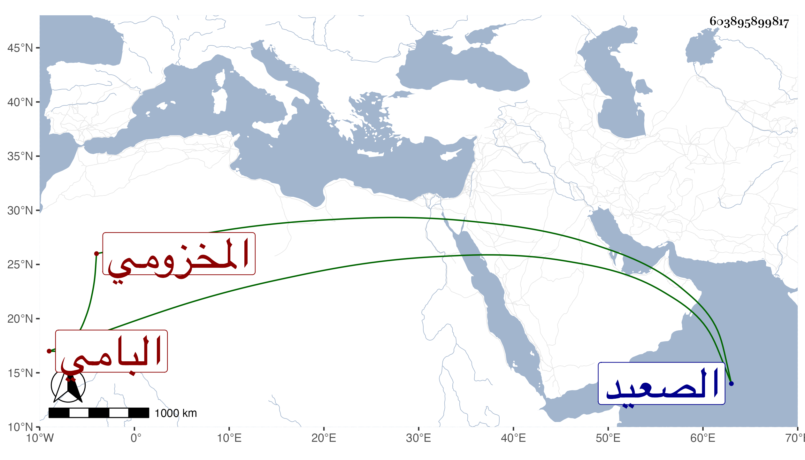

0902Sakhawi.DawLamic.ITO20230111-ara1.EIS1600.603895899817
Biography ID: 603895899817
251
أحمد بن محمد بن أحمد بن محمد بن أحمد بن محمد بن أحمد بن قريش هكذا قرأت نسبه بخط ولده الشهاب أو النجم أبو العباس بن النجم أو الشمس أبي عبد الله ابن الشهاب المخزومي البامي الأصل بباء موحدة ثم ميم كما هو على الألسنة وهو الذي قرأته بخطهما نسبة لقرية من الصعيد تحول منها قبل بلوغه القاهري الشافعي والد الشمس محمد الآتي والمذكور جده وأبوه ويعرف بالبامي . قال شيخنا في أنبائه أنه كان يصحب الصدر المناوي وتقدم في ولاية القضاء ثم ولي تدريس الشريفية بالقرب من الجودرية وسكن بها إلى أن مات في سنة أربعين وقد جاز الثمانين . وذكره في مشتبه النسبة في اليامي بالتحتانية والنامي بالنون فقال وبموحدة شهاب الدين البامي صاحبنا بالمدرسة الشيخونية انتهى . ومن شيوخه الصدر الأبشيطي ورأيت إذنه له في التدريس والفتوى وذلك في سنة إحدى وثمانمائة وقال أنه عاشره سفرا وحضرا وخالطه فوجده دينا عفيفا حسن الأخلاق محافظا على أداء الفرائض والسنن ملازما لتلاوة كتاب الله تعالى مداوما على الاشتغال بالعلم سخي النفس بالجود والمعروف حسن الصحبة والمخالطة مع ما من الله به عليه من الفهم المليح في العلم ورزقه الذهن السليم وحسن تصور المسائل والعثور على الصواب في شرح فقه التنبيه وغيره ، إلى آخر كلامه .
